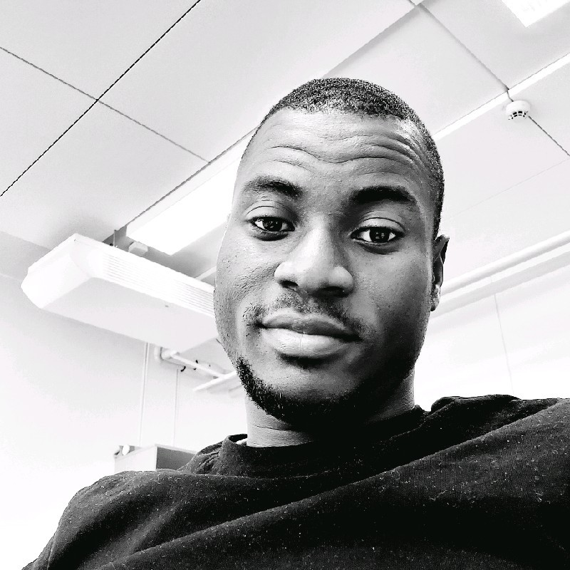

I am a Doctoral Researcher at Tampere University.
I’m passionate about applied mathematics
and currently studying small solar system bodies
using FETD-based tomographic full-wave radar imaging.
My work spans various fields including neuroelectricity,
industrial energy systems, data analytics, and digital twin technology.
I’m eager to connect and collaborate to create real-world solutions.
Let’s shape the future together!.